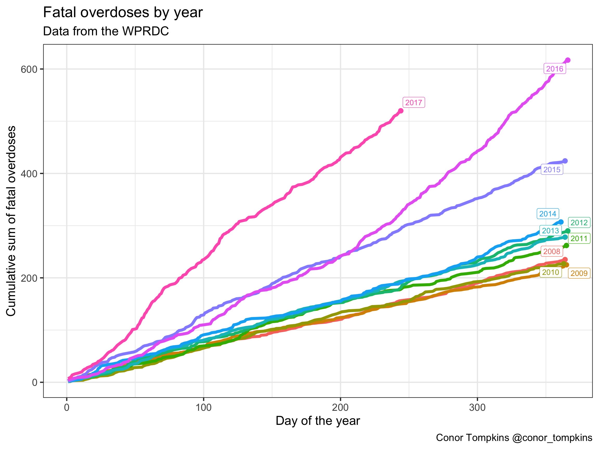
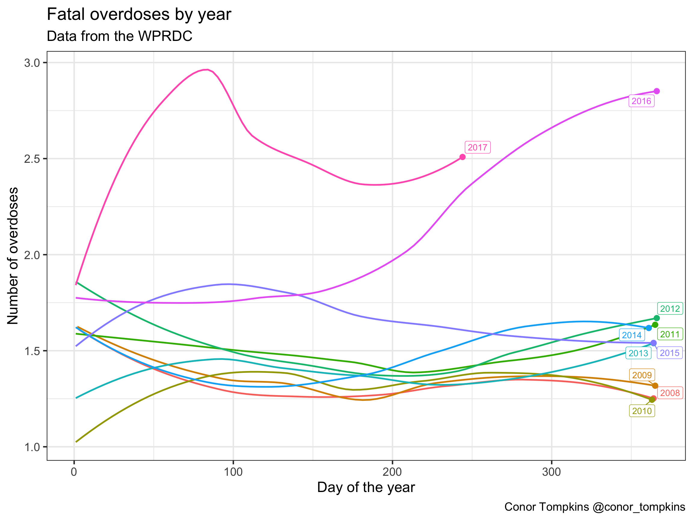
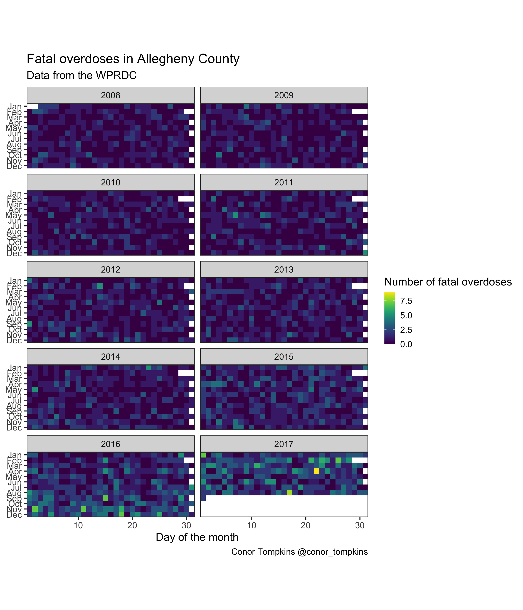
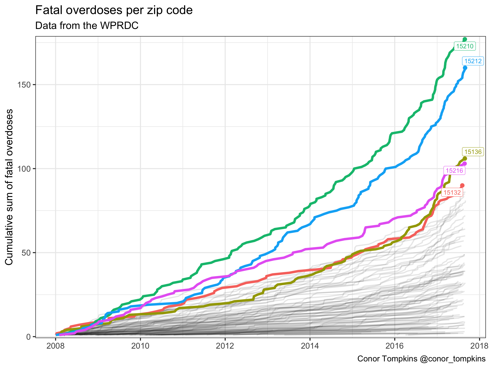
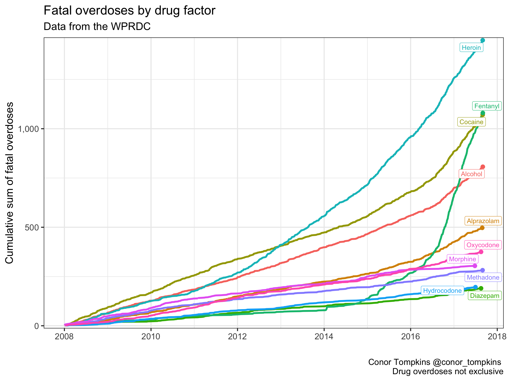
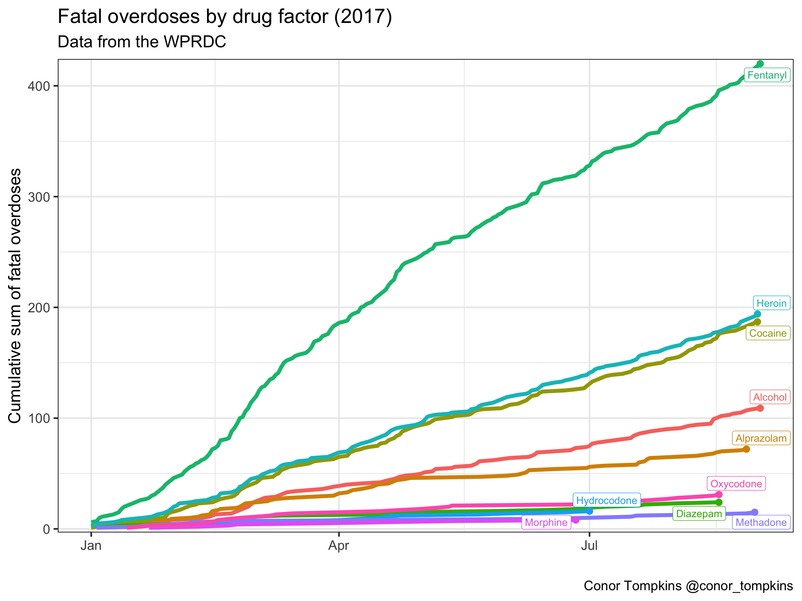
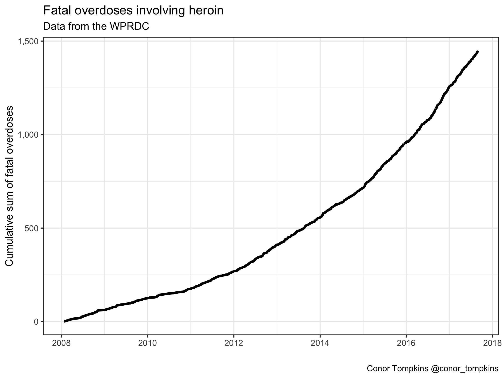
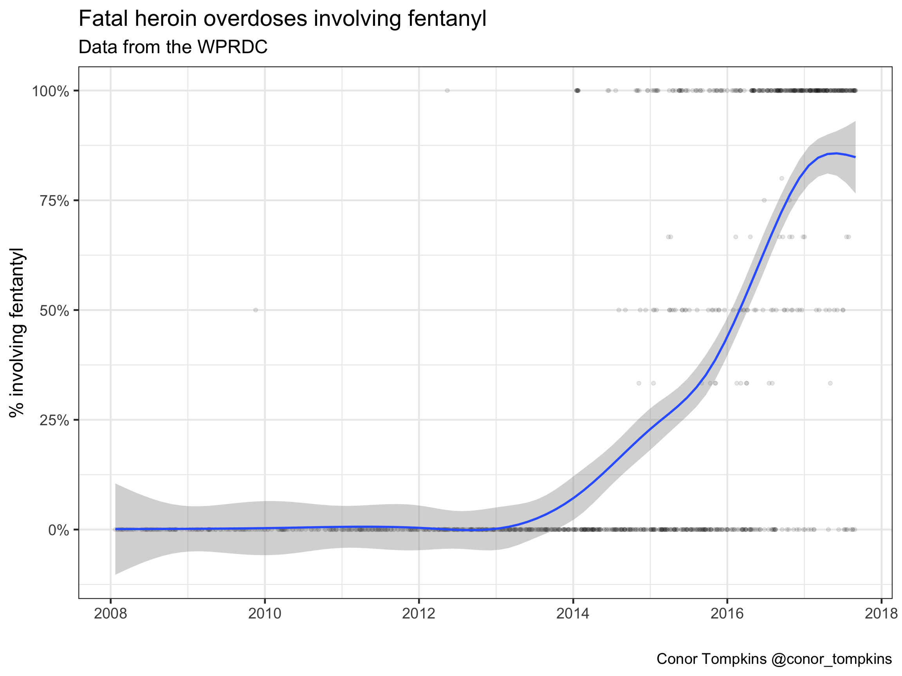

library(tidyverse)
library(lubridate)
library(scales)
library(viridis)
library(ggrepel)
library(knitr)
library(kableExtra)
#use a customized version of theme_bw()
theme_set(theme_bw(base_size = 18))Opiate addiction and overdose have become a major problem in American society. The life expectancy in the U.S. has decreased for the past 2 years, and deaths from drug overdoses rose 21% from 2016 to 2017.
Communities have been flooded with prescription painkillers with deadly effects.
Pennsylvania and the Pittsburgh area have also suffered from drug overdoses. 38 out of every 100,000 Pennsylvanians died from a drug overdose in 2017
The Western Pennsylvania Regional Data Center has published data on accidental fatal overdoses in Allegheny County. The data spans from 2008 to present day, with a few months of delay on the most recent data due to the time required to collect and process the data.
In this post, I will use R to perform an exploratory data analysis on this data. I hope to find interesting trends in the data, and identify areas for further study. As always, the code and data used in this post are available here and on my GitHub repository for this post.
The first step is to load the libraries we will use, and to set the theme for all the plots.
Then, load the data that the WPRDC published. I’ve already done some preprocessing of the data to get it into shape. You can find that script here.
df <- read_csv("https://raw.githubusercontent.com/conorotompkins/allegheny_overdoses/master/data/overdose_df.csv")This code changes the way R treats some of the data, which makes it more useful for plotting. It also filters out data that was entered after September 1, 2017. This is because the data after that date is not complete.
df %>%
mutate(year = as.factor(year),
incident_zip = as.character(incident_zip),
month = month(date, label = TRUE)) %>%
filter(date <= "2017-09-01") -> dfLet’s look at what the data looks like. Each row represents an individual overdose.
df %>%
select(-c(year, yday, month, mday, wday, starts_with("combined"))) %>%
head() %>%
kable("html") %>%
kable_styling()| id | date | death_time | manner_of_death | age | sex | race | case_dispo | incident_zip | decedent_zip | od_factors |
|---|---|---|---|---|---|---|---|---|---|---|
| 1 | 2008-01-03 | 06:20:00 | ACCIDENT | 44 | Male | Black | MO | 15212 | 15212 | Alcohol, Codeine, Morphine |
| 2 | 2008-01-03 | 10:19:00 | ACCIDENT | 42 | Male | White | MO | NA | 15206 | Mephobarbital, Morphine, Phenobarbital |
| 3 | 2008-01-04 | 09:43:00 | ACCIDENT | 58 | Male | White | MO | 15132 | 15132 | Alcohol, Methadone, Nordiazepam |
| 4 | 2008-01-04 | 23:15:00 | ACCIDENT | 39 | Male | White | MO | 15204 | 15204 | Alprazolam, Methadone, Nordiazepam |
| 5 | 2008-01-05 | 07:45:00 | ACCIDENT | 42 | Male | White | MO | 15239 | 15239 | Alcohol, Morphine |
| 6 | 2008-01-05 | 10:50:00 | Accidents | 34 | Male | White | MO | 15235 | 15235 | Diphenhydramine, Morphine, Paroxetine, Trazodone |
This chart shows the cumulative sum of all fatal overdoses in the timeframe of the dataset. This plot shows a visible uptick in the number of overdoses starting in 2015.
df %>%
count(date) %>%
mutate(n_cumsum = cumsum(n)) %>%
ggplot(aes(date, n_cumsum)) +
geom_hline(yintercept = 0) +
geom_line(size = 2) +
scale_y_continuous(label=comma) +
labs(title = "Fatal overdoses in Allegheny County",
y = "Cumulative sum of fatal overdoses",
x = "",
subtitle = "Data from the WPRDC",
caption = "Conor Tompkins @conor_tompkins")
We can explore this data more granularly by looking at each year individually. The overall trend for the years 2008-2014 appear to be largely the same. As we saw in the previous graph, the number of fatal overdoses began to increase in 2015, and the situation worsened in 2016. 2017 was clearly on pace to be the worst year on record.
df %>%
group_by(year, yday) %>%
summarize(n = n()) %>%
mutate(n_cumsum = cumsum(n)) -> df_year_cumsum
df %>%
group_by(year) %>%
summarize(last_yday = last(yday),
total = n()) -> df_year_tag
ggplot(data = df_year_cumsum, aes(x = yday, y = n_cumsum, color = year)) +
geom_line(size = 2) +
geom_label_repel(data = df_year_tag, aes(x = last_yday, y = total, label = year, color = year, group = year)) +
geom_point(data = df_year_tag, aes(x = last_yday, y = total, color = year, group = year), size = 3) +
scale_size_continuous(guide = FALSE) +
scale_color_discrete(guide = FALSE) +
labs(title = "Fatal overdoses by year",
x = "Day of the year",
y = "Cumulative sum of fatal overdoses",
subtitle = "Data from the WPRDC",
caption = "Conor Tompkins @conor_tompkins")
This plot shows a smoothed representation of the number of fatal overdoses per day for each year. 2016 and 2017 stand out here. Overdoses in 2016 escalated around June. As we saw previously, 2017 was worse than 2016.
df %>%
count(year, yday) -> df_year
df %>%
count(year, yday) %>%
group_by(year) %>%
mutate(smooth = predict(loess(n ~ yday))) %>%
summarize(last_yday = last(yday),
last_smooth = last(smooth),
tag = unique(year)) -> df_year_label
ggplot(data = df_year, aes(x = yday, y = n, color = year)) +
geom_smooth(se = FALSE) +
geom_label_repel(data = df_year_label, aes(x = last_yday, y = last_smooth, label = year)) +
geom_point(data = df_year_label, aes(x = last_yday, y = last_smooth), size = 3) +
scale_color_discrete(guide = FALSE) +
labs(title = "Fatal overdoses by year",
x = "Day of the year",
y = "Number of overdoses",
subtitle = "Data from the WPRDC",
caption = "Conor Tompkins @conor_tompkins")
This heatmap shows the number of fatal overdoses by day of the month, month, and year. This plot shows spikes in deaths, especially in 2016 and 2017. Some media report that this phenomenon could be explained by fentanyl, a particularly potent synthetic opiate. For example, a heroin user could get a supply of heroin laced with fentanyl, and underestimate the strength of the dose.
#create df of full calendar
df_dates <- tibble(date = seq(first(df$date), last(df$date), by = "day"))
#create tile df
df %>%
mutate(n = 1) %>%
right_join(df_dates) %>%
mutate(year = year(date),
month = month(date, label = TRUE),
mday = mday(date)) %>%
group_by(year, month, mday) %>%
summarize(n = sum(n)) %>%
replace_na(list(n = 0)) -> df_tile
df_tile %>%
ggplot(aes(mday, month, fill = n)) +
geom_tile() +
facet_wrap(~year, ncol = 2) +
scale_fill_viridis("Number of fatal overdoses") +
coord_equal() +
scale_x_continuous(expand = c(0,0)) +
scale_y_discrete(expand = c(0,0),
limits = rev(levels(df$month))) +
labs(title = "Fatal overdoses in Allegheny County",
y = NULL,
x = "Day of the month",
subtitle = "Data from the WPRDC",
caption = "Conor Tompkins @conor_tompkins") +
theme(panel.grid = element_blank())
The WPRDC dataset identifies the zip code that the overdose occurred in, which allows a broad geographic analysis of which communities are affected. The Mt. Oliver/Knoxville/Carrick area (15210) is most affected, followed by the North Side/Brighton Heights/Spring Hill (15212) and McKees Rocks/Robinson (15136) areas.
#fatal overdoses by zip code
top_zips <- df %>%
count(incident_zip, sort = TRUE) %>%
top_n(5) %>%
select(incident_zip) %>%
unlist()
df %>%
count(incident_zip, sort = TRUE) %>%
top_n(5) %>%
rename("fatal_overdoses" = n,
"incident_zip_code" = incident_zip) %>%
kable("html") %>%
kable_styling()| incident_zip_code | fatal_overdoses |
|---|---|
| 15210 | 177 |
| 15212 | 160 |
| 15136 | 106 |
| 15216 | 103 |
| 15132 | 90 |
A cumulative view of the data by zip code show that 15210 and 15212 are in a different category compared to the other areas of Allegheny County.
zips_df <- df %>%
arrange(incident_zip, date) %>%
count(incident_zip, date) %>%
group_by(incident_zip) %>%
mutate(n_cumsum = cumsum(n))
top_zips_df <- zips_df %>%
filter(incident_zip %in% top_zips)
top_zips_df_labels <- df %>%
filter(incident_zip %in% top_zips) %>%
group_by(incident_zip) %>%
summarize(last_date = last(date),
tag = unique(incident_zip),
total = n())
ggplot(zips_df, aes(x = date, y = n_cumsum, group = incident_zip)) +
geom_line(size = 1, alpha = .1) +
geom_line(data = top_zips_df, aes(x = date, y = n_cumsum, color = incident_zip), size = 2) +
geom_label_repel(data = top_zips_df_labels, aes(x = last_date, y = total, label = tag, color = incident_zip)) +
geom_point(data = top_zips_df_labels, aes(x = last_date, y = total, color = incident_zip), size = 3) +
scale_alpha_manual(values = c(.1, 1), guide = FALSE) +
scale_color_discrete(guide = FALSE) +
scale_y_continuous(expand = c(.01, .1)) +
labs(title = "Fatal overdoses per zip code",
x = NULL,
y = "Cumulative sum of fatal overdoses",
subtitle = "Data from the WPRDC",
caption = "Conor Tompkins @conor_tompkins")
A cumulative view of the number of overdoses by factor (drug) shows a striking trend. This table shows the top 10 drugs in terms of number of overdoses. It is important to note that most of these are not exclusive. An overdose victim can have multiple drugs in their system at the time of autopsy.
df_factor_total <- tibble(factor = c(df$combined_od1,
df$combined_od2,
df$combined_od3,
df$combined_od4,
df$combined_od5,
df$combined_od6,
df$combined_od7))
df_factor_total <- df_factor_total %>%
filter(!is.na(factor)) %>%
count(factor, sort = TRUE)
df_factor_total %>%
rename("number_of_overdoses" = n) %>%
top_n(10) %>%
kable("html") %>%
kable_styling()| factor | number_of_overdoses |
|---|---|
| Heroin | 1449 |
| Cocaine | 1071 |
| Fentanyl | 1017 |
| Alcohol | 807 |
| Alprazolam | 497 |
| Oxycodone | 375 |
| Morphine | 304 |
| Methadone | 282 |
| Hydrocodone | 196 |
| Diazepam | 190 |
Cocaine was the most common drug in the system of overdose victims up until 2012, but it was passed by heroin in 2013. The number of overdoses involving fentanyl exploded in 2015.
df %>%
mutate(od_heroin = str_detect(od_factors, "Heroin"),
od_cocaine = str_detect(od_factors, "Cocaine"),
od_fentanyl = str_detect(od_factors, "Fentanyl"),
od_alcohol = str_detect(od_factors, "Alcohol"),
od_alprazolam = str_detect(od_factors, "Alprazolam"),
od_oxycodone = str_detect(od_factors, "Oxycodone"),
od_morphine = str_detect(od_factors, "Morphine"),
od_methadone = str_detect(od_factors, "Methadone"),
od_hydrocodone = str_detect(od_factors, "Hydrocodone"),
od_diazepam = str_detect(od_factors, "Diazepam")) -> df_factors
df_factors %>%
gather(od_factor, od_flag, starts_with("od_")) %>%
#gather(od_factor, od_flag, c(od_heroin, od_cocaine, od_fentanyl, od_alcohol)) %>%
filter(od_flag == TRUE) %>%
mutate(od_factor = str_to_title(str_replace(od_factor, "od_", ""))) -> df_factors_long
#create od_factor df
df_factors_long %>%
group_by(od_factor, date) %>%
summarize(n = n()) %>%
group_by(od_factor) %>%
mutate(od_cumsum = cumsum(n)) -> df_factors_cumsum
#create label df for od_factors
df_factors_long %>%
group_by(od_factor) %>%
summarize(last_date = last(date),
total = n()) -> df_factors_cumsum_label
#plot cumulative od_factor
ggplot(data = df_factors_cumsum, aes(x = date, y = od_cumsum, color = od_factor)) +
geom_line(size = 1.5) +
geom_label_repel(data = df_factors_cumsum_label, aes(x = last_date, y = total, label = od_factor, group = od_factor)) +
geom_point(data = df_factors_cumsum_label, aes(x = last_date, y = total, group = od_factor, color = od_factor), size = 3) +
scale_color_discrete(guide = FALSE) +
scale_y_continuous(expand = c(.01, .1), label = comma) +
labs(title = "Fatal overdoses by drug factor",
y = "Cumulative sum of fatal overdoses",
x = "",
subtitle = "Data from the WPRDC",
caption = "Conor Tompkins @conor_tompkins \n Drug overdoses not exclusive")
A view of the same data for the year 2017 show that fentanyl has by far been the most common drug linked to fatal overdoses.
df_factors_long %>%
filter(date >= "2017-01-01") %>%
group_by(od_factor, date) %>%
summarize(n = n()) %>%
group_by(od_factor) %>%
mutate(od_cumsum = cumsum(n)) -> df_factors_cumsum_2017
df_factors_long %>%
filter(date >= "2017-01-01") %>%
group_by(od_factor) %>%
summarize(last_date = last(date),
total = n()) -> df_factors_cumsum_label_2017
df_factors_cumsum_2017 %>%
ggplot(aes(date, od_cumsum, color = od_factor)) +
geom_line(size = 2) +
geom_label_repel(data = df_factors_cumsum_label_2017, aes(x = last_date, y = total, label = od_factor, group = od_factor)) +
geom_point(data = df_factors_cumsum_label_2017, aes(x = last_date, y = total, group = od_factor, color = od_factor), size = 3) +
scale_color_discrete(guide = FALSE) +
scale_y_continuous(expand = c(.01, .1)) +
labs(title = "Fatal overdoses by drug factor (2017)",
y = "Cumulative sum of fatal overdoses",
x = "",
subtitle = "Data from the WPRDC",
caption = "Conor Tompkins @conor_tompkins")
Heroin and fentanyl have proven to be a particularly deadly combination. We can explore the combination of these drugs. This plot shows the cumulative number of fatal overdoses involving heroin.
df_factors %>%
select(date, od_heroin) %>%
filter(od_heroin) %>%
count(date) %>%
mutate(n_cumsum = cumsum(n),
tag = "Heroin") %>%
ggplot(aes(x = date, y = n_cumsum)) +
geom_line(size = 2) +
scale_y_continuous(label = comma) +
labs(title = "Fatal overdoses involving heroin",
x = "",
y = "Cumulative sum of fatal overdoses",
subtitle = "Data from the WPRDC",
caption = "Conor Tompkins @conor_tompkins")
This plot shows the % of fatal heroin overdoses that also involve fentanyl. Again, we see that fentanyl arrived in Allegheny County in 2014, and quickly became closely linked to heroin. In late 2017, over 75% of heroin overdoses involved fentanyl.
df_factors %>%
select(date, od_heroin, od_fentanyl) %>%
filter(od_heroin) %>%
group_by(date) %>%
summarize(percent_fentanyl = mean(od_fentanyl)) -> df_factors_heroin_fent
df_factors_heroin_fent %>%
ggplot(aes(date, percent_fentanyl)) +
geom_point(alpha = .1) +
geom_smooth() +
scale_y_continuous(labels = scales::percent) +
labs(title = "Fatal heroin overdoses involving fentanyl",
x = "",
y = "% involving fentantyl",
subtitle = "Data from the WPRDC",
caption = "Conor Tompkins @conor_tompkins")
Areas for further research
Geographic analysis using the zip code data could expose more information about how communities are impacted by drug overdoses.
Demographic analysis could be used to analyze how drug overdoses affect different parts of the population.
The combination of heroin and fentanyl can be explored further. It would also be worth exploring whether there is any link between fentanyl and cocaine. More generally, the correlation between the various drugs could be explored using network analysis.